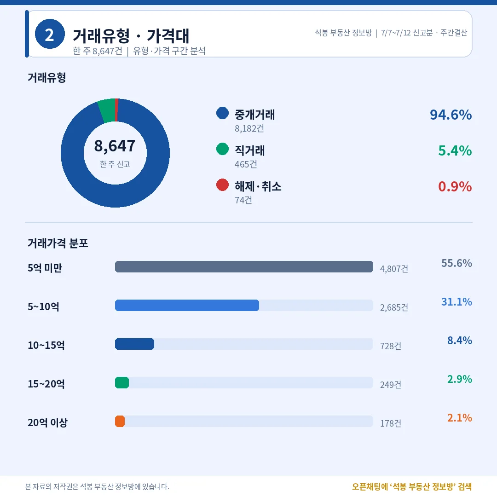
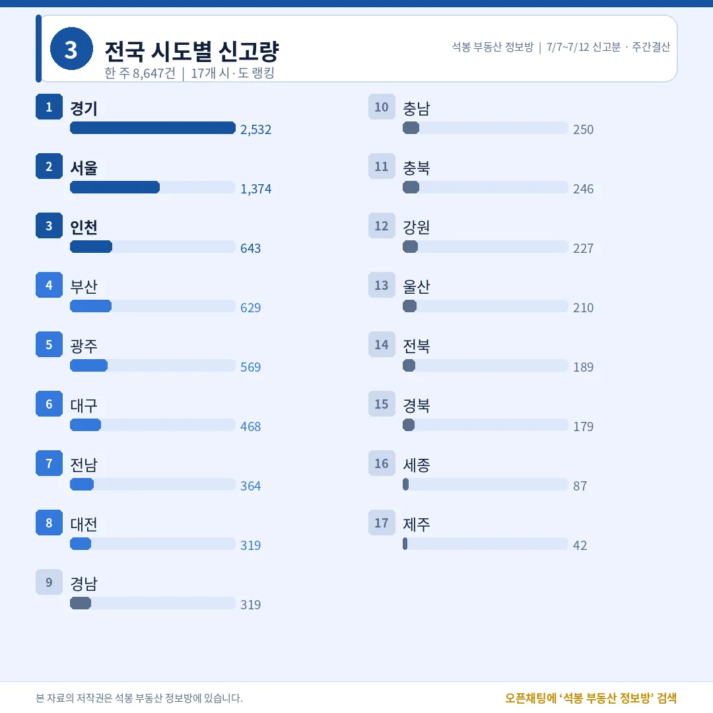
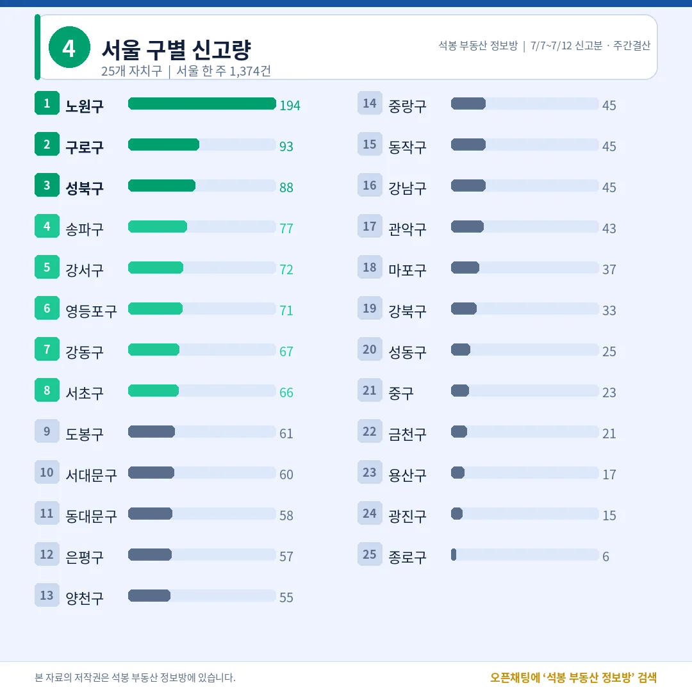
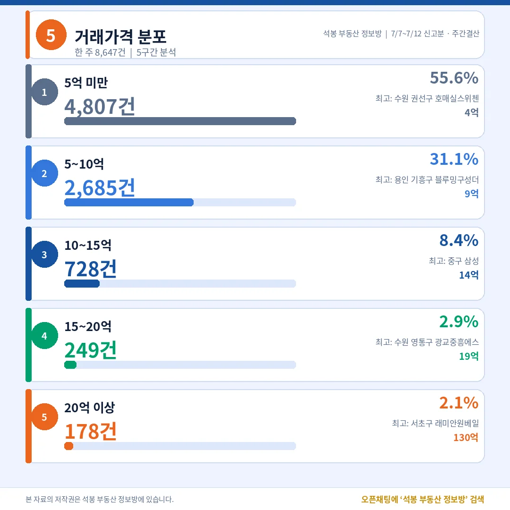
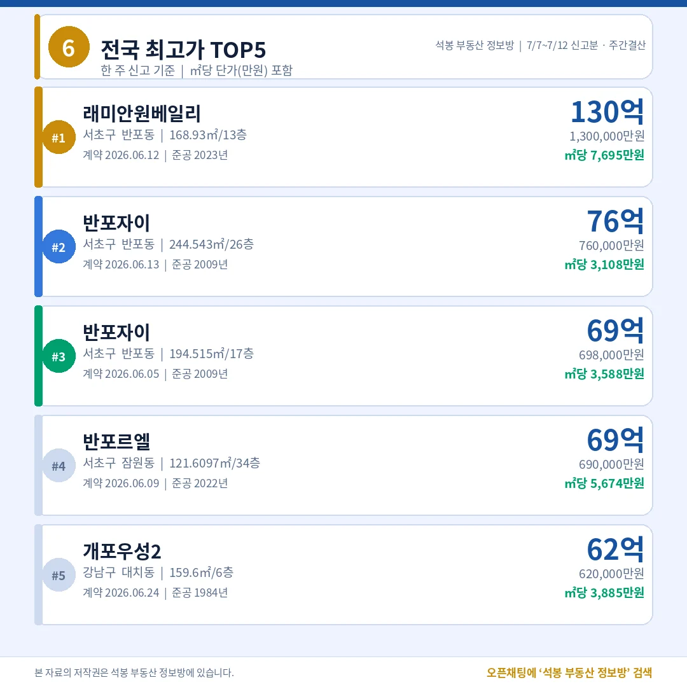
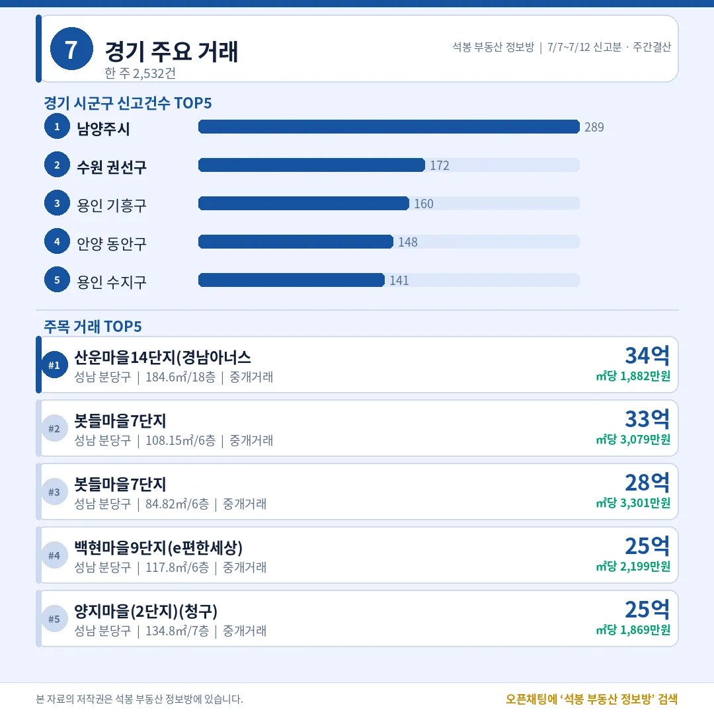
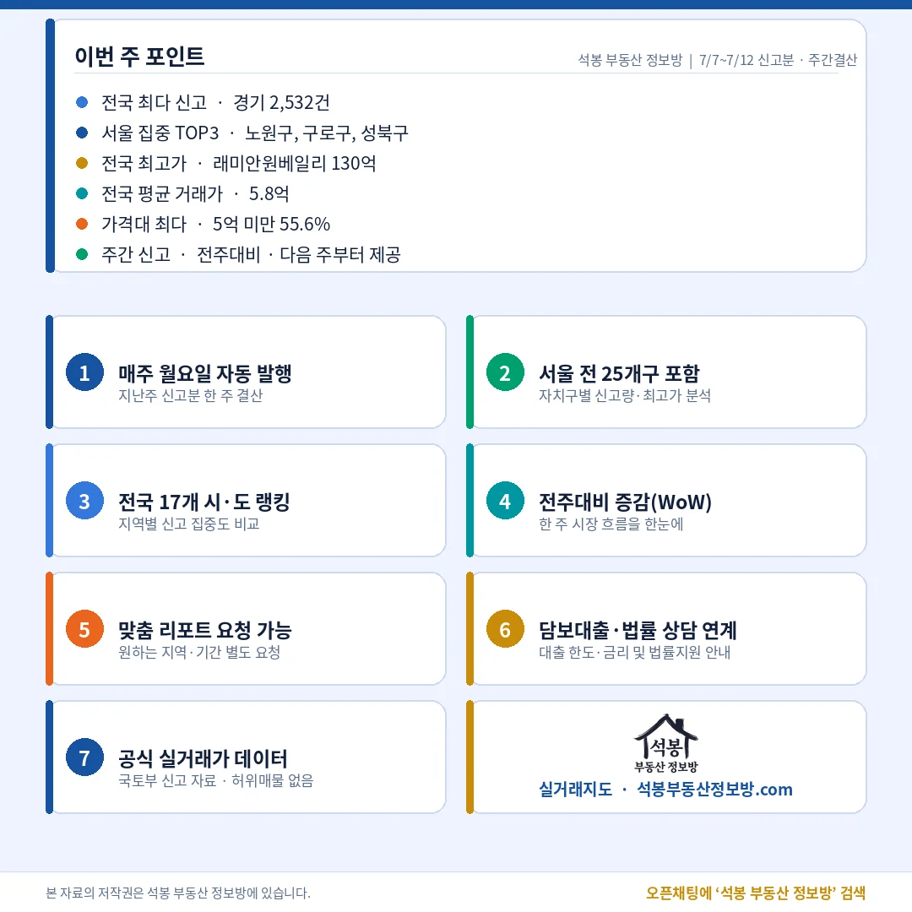

지난 한 주(7월 7일~12일) 전국에서 아파트 8,647건이 실거래로 신고됐습니다. 서초 반포에선 130억짜리 거래가, 지방에선 3억 안팎 거래가 같은 주에 쏟아졌죠. 거래의 몸통은 5억 미만 중저가인데 시선은 반포·강남 고가에 쏠린 한 주였습니다. 지난주 시장, 핵심만 짚어 드립니다.
지난주 시장 한눈에 — 신고 8,647건, 해제율 0.9%

거래유형·가격대
지난주 신고 8,647건 가운데 중개거래가 8,182건으로 94.6%를 차지했습니다. 직거래는 465건(5.4%), 해제·취소는 74건(0.9%)에 그쳤죠. 계약이 뒤집히는 비율이 1%도 안 된다는 건, 시장이 눈치보기(관망)보다는 실수요 중심으로 계약이 성사되고 있다는 신호로 읽힙니다. 직거래 5.4%는 중개사를 끼지 않은 거래로, 가족·지인 간 거래이거나 증여성 거래가 섞여 있을 수 있는 대목입니다.
가격대별로는 5억 미만이 4,807건(55.6%)으로 절반을 넘었고, 5~10억이 2,685건(31.1%)으로 뒤를 이었습니다. 10~15억은 728건(8.4%), 20억 이상은 178건(2.1%)이었습니다. 거래의 몸통은 중저가인데 뉴스가 주목하는 건 20억 넘는 고가라는, 전국 시장의 이중 구조가 그대로 보입니다.
여기서부터는 회원에게 보여드립니다
카카오 로그인 3초면 전문을 읽을 수 있습니다. 무료입니다.
가입하시면 지역 시장조사 보고서(약식)를 2회 무료로 요청하실 수 있습니다.
이미 회원이면 같은 버튼으로 로그인만 됩니다
전국 어디서 거래됐나 — 경기 압도적 1위, 수도권 53%

전국 시도별 랭킹
지역별로는 경기가 2,532건으로 압도적 1위였습니다. 전국 신고분의 약 29%가 경기 한 곳에서 나온 셈이죠. 뒤이어 서울 1,374건, 인천 643건, 부산 629건, 광주 569건 순이었습니다. 서울·경기·인천 수도권을 합치면 4,549건으로 전국의 52.6%를 차지했습니다.
거래의 절반 이상이 수도권에서 나오지만, 나머지 절반은 부산·광주·대구 같은 지방 광역권이 채우고 있다는 뜻이기도 합니다. 경기의 물량 쏠림과 지방의 꾸준한 거래, 이 두 흐름이 지난주 전국 시장의 골격이었습니다.
서울 자치구별 — 거래 1위는 강남 아닌 노원

서울 자치구별 거래량
서울 안에서는 노원구가 194건으로 자치구 1위였습니다. 구로구 93건, 성북구 88건이 뒤를 이었고, 송파 77건·강서 72건 순이었습니다. 눈에 띄는 건 강남구입니다. 강남구는 45건으로 25개 자치구 중 16위에 그쳤고, 서초구도 66건(8위)에 머물렀습니다. 거래량만 놓고 보면 서울 시장을 움직이는 축은 강남3구가 아니라 노원·구로·성북 같은 중저가 실수요 지역이라는 사실이 뚜렷합니다.
노원구는 중소형·구축 아파트가 밀집한 대표적인 실수요 지역입니다. 이런 곳에서 거래가 꾸준히 나온다는 건, 실제로 집을 사서 들어가 살려는 수요가 서울 거래량의 몸통이라는 의미로 볼 수 있습니다. 반면 뒤에서 보겠지만 '가격'의 무게중심은 전혀 다른 곳에 있습니다.
가격대별로 보면 — 5억 미만이 56%, 중저가 장세

가격대 상세
가격대 분포를 다시 보면 5억 미만이 4,807건(55.6%)으로 절반을 넘습니다. 이 구간의 최고가는 수원 권선구 호매실스위첸 4억이었죠. 5~10억(2,685건)의 최고가는 용인 기흥구 블루밍구성더포레 9억, 10~15억(728건)은 중구 삼성 14억이었습니다. 20억 이상(178건, 2.1%)의 정점이 바로 뒤에서 볼 반포 래미안원베일리 130억입니다. 같은 '아파트'라도 4억부터 130억까지 30배 넘게 벌어지는, 한 나라 안의 서로 다른 시장이 한 장에 담겨 있습니다.
지난주 최고가 — 반포 래미안원베일리 130억

전국 최고가 TOP5
지난주 전국 최고가는 서초구 래미안원베일리 전용 168.93㎡, 130억이었습니다. ㎡당 단가로 환산하면 약 7,695만원 — 3.3㎡(1평)로 치면 2억 5천만원을 넘습니다. 이어 반포자이 76억·69억, 반포르엘(서초 잠원동) 69억으로 TOP4가 모두 서초구였고, 5위는 강남구 대치동 개포우성2가 62억으로 이름을 올렸습니다.
흥미로운 지점은 단가입니다. 준공 2022년 반포르엘은 121.6㎡에 69억으로 ㎡당 5,674만원인 반면, 준공 2009년 반포자이는 같은 값 69억이라도 194.5㎡라 ㎡당 3,588만원입니다. '작고 새 아파트'의 평단가가 훨씬 높다는 뜻이죠. 반대로 5위 개포우성2는 1984년 준공된 노후 단지인데도 62억에 거래됐습니다. 낡은 아파트가 이 값을 받는 이유는 하나, 재건축 기대감입니다.
주목 지역 — 경기 남양주·수원, 인천은 송도

지역 스포트라이트
거래량 1위 경기(2,532건) 안에서는 남양주시가 289건으로 시군구 1위였고 수원 권선구(172건), 용인 기흥구(160건)가 뒤를 이었습니다. 다만 '고가 거래'는 결이 달랐습니다. 경기 주목 거래 TOP5는 산운마을14단지 34억을 비롯해 전부 성남 분당구(판교권)가 채웠죠. 물량은 외곽 실수요지, 가격은 판교라는 경기 특유의 이중 구조입니다. 인천(643건)은 연수구가 120건으로 1위였고, 주목 거래 TOP5 역시 송도더샵파크애비뉴 13억 등 다섯 곳 모두 연수구 송도 단지였습니다. 인천의 프리미엄 수요가 송도로 집중되고 있음을 보여줍니다.
이번 주 인사이트

지난주 시장은 거래량은 경기·노원 같은 실수요 지역, 가격은 서초 반포라는 두 축이 뚜렷했습니다. 전국 평균 거래가는 5.8억, 5억 미만이 55.6%를 차지하는 중저가 장세 속에서도 최고가 자리는 반포 래미안원베일리 130억이 지켰습니다. 해제율 0.9%로 계약의 '진성' 비율이 높았다는 점도 눈여겨볼 대목입니다.
이번 주 볼 포인트는 두 가지입니다. ① 경기 남양주·수원 등 실수요 외곽의 거래량이 계속 늘어나는지, ② 반포·강남3구 밖에서 신고가 거래가 새로 나오는지입니다. 참고로 전주대비 증감(WoW)은 비교에 필요한 지난주 데이터가 아직 갖춰지지 않아 이번 회차는 표기하지 않았고, 다음 주부터 매주 함께 전해 드립니다. 매주 월요일 아침, 지난 한 주 전국에서 아파트가 얼마나·어디서·얼마에 팔렸는지 가장 먼저 정리해 드리겠습니다.
원자료: 국토교통부 실거래가 공개시스템(2026년 7월 7일~12일 신고분) · 편집·제작: 석봉 부동산 정보방 · 본 자료는 정보 제공 목적이며 투자 권유가 아닙니다.